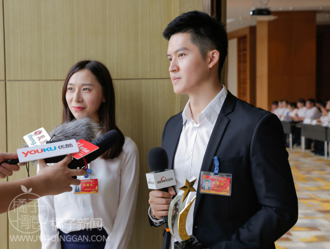
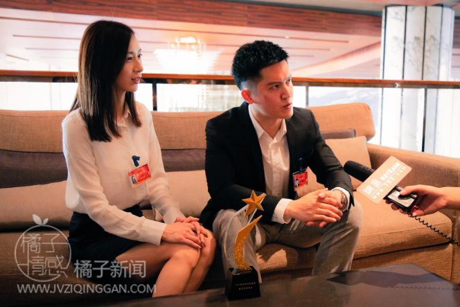

- 返回顶部
- 4006-299-520
- 在线咨询
- 微信公众号

“十大杰出诚信企业表彰大会”如期在山东济南隆重召开，各界领导也出席本次大会，发表重要讲话。
来自传统制造业、教育咨询业、保险业、餐饮业、建筑业、媒体出版业、化学化工行业等社会各行业也共计137家企业参加会议，共同探讨如何在当代经济发展大势下，尊重消费者权益，构建行业诚信服务制度。
大会评选出十大杰出诚信企业进行表彰，橘子情感作为互联网教育咨询业中的佼佼者，获选山东省十大杰出诚信企业，到场媒体争相采访。
大会结束后，橘子情感创始人嘉伟接受网易新闻专访。
嘉伟表示，获得十大杰出诚信企业称号对他，对公司都是一个巨大的鼓励，他再三表示了对中国消费者报社、山东省人民政府、山东省消费者协会以及广大消费者的感谢，并承诺在今后的经营里依然会秉承对消费者负责的态度，将“诚信经营”当做公司发展的信条。
在记者询问创建橘子创想的初衷时，嘉伟回复道：“现代社会，经济发展越来越迅速，可人在感情中却越来越迷失自己。许多大龄青年，不会恋爱，不会与异性相处，分手率过高，已婚夫妻，离婚率也在逐年飘高，这极大的影响了国民幸福指数。为了解决恋爱、婚姻不稳定的问题，我联合了业内几位权威情感挽回专家、心理咨询师，创立了橘子情感，希望能为社会稳定做出贡献。”
每一个讲求诚信、有远大志向的公司，在创业时都不是只看眼前利益的，而是在创业中将个人价值和社会价值相统一，在实现个人价值的同时，也为社会做出贡献。橘子情感也是这样，公司的发展不仅仅是为了成就自己的一番事业，也是在提供工作岗位，为社会解决就业问题。公司的发展方向也志在关爱两性健康关系，维护社会稳定。
嘉伟还对情感挽回行业的前景表示看好：“针对现今社会的婚恋情况，越来越多的人意识到当自己的感情出问题的时候，需要找专业情感机构进行情感问题咨询，这就决定了情感挽回行业将会飞速发展。希望会有更多的专业人士加入我们，为解决单身问题、解决婚姻问题，为维护社会稳定发挥作用。”